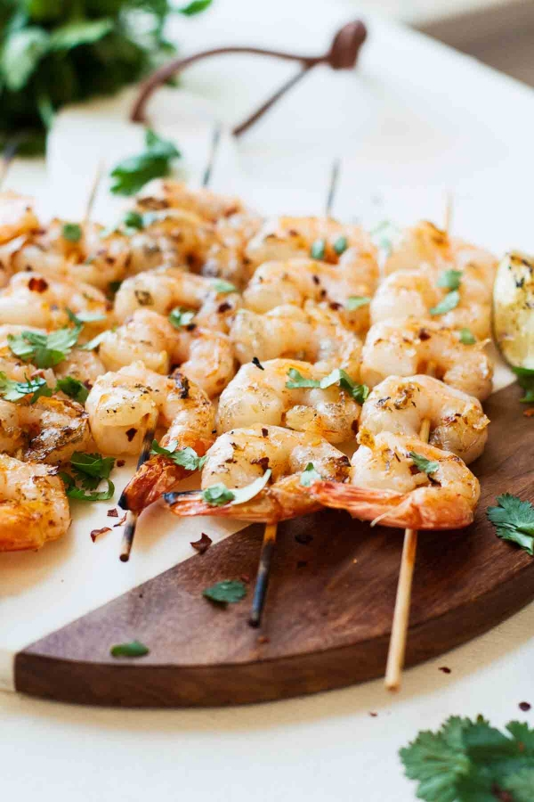

Spicy Grilled Shrimp w/ Pineapple Sauce
ingredients:
direction:
Preheat the grill to about 350 degrees (or medium-high heat).
Fully thaw the shrimp and place about 4-5 shrimp
on each skewer.
Mix the oil/butter and red pepper powder together, then coat each shrimp skewer.
Grill on each side
for about 3-5 minutes
or until opaque.
Mix the minced pineapple and minced tomatoes together to create the salsa.
Top each shrimp skewer with
crushed red pepper
, fresh lime juice, cilantro, and pineapple salsa.
Serve and enjoy!
10-Minute Margherita Pita Bread Pizzas
ingredients:
direction:
Preheat oven to 350 degrees.
Top each brown bread with tomato sauce, lettuce, tomato slices, basil, and fresh
mozzarella.
Bake on a baking sheet covered in foil paper for 5-7 minutes (or until the cheese melts).
move
from oven and enjoy!
VEGAN LOADED MASHED POTATO BOWLS
ingredients:
direction:
Heat the olive oil over medium-high heat for 2-3 minutes.
Add the carrots and sauté for about 10 minutes.
Add the mushrooms to the pan and continue to sauté for another 10 minutes.
Add the spinach and sauté for
another 5 minutes.
Place the Creamy Garlic Mashed Potatoes in each bowl and heat up in the microwave.
Add the cooked carrots,
mushrooms, and spinach to each bowl.
Serve and enjoy!
ONE-POT HONEY ROSEMARY CHICKEN & VEGETABLES
ingredients:
direction:
Begin cooking the chicken breasts over medium heat.
While the chicken is cooking, mix together the honey,
freshly squeezed lemon, rosemary, and garlic to create the glaze.
When the chicken is about 3/4 of the way cooked,
pour 1/2 of the glaze over the chicken and finish cooking. Set the chicken aside.
Immediately throw the veggies
into the warm pan and begin cooking. If they are frozen, cook until they thaw and then top with the remaining glaze.
If they are fresh, top with the remaining glaze right away. Cook until the veggies are soft.
Plate the chicken and vegetables, garnish with extra rosemary and/or parsley (if desired), serve and ENJOY!